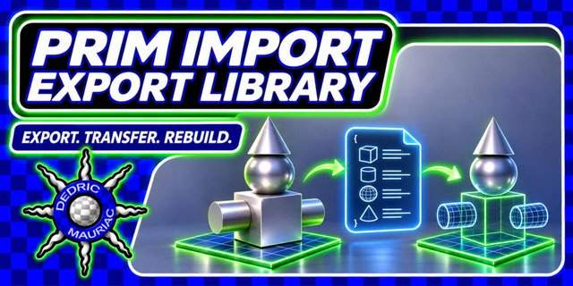

Prim Import/Export Library
Getting objects out of Second Life

LSL scripts from 2015 that read a prim's parameters and write code to rebuild it somewhere else.
Executive summary
Why it exists
Second Life has no file you can save an object to, so moving your own builds anywhere else means reading them out piece by piece.
Outcome
Written in 2015. Only export objects you created or have permission to copy.
My role
Author.
Technical overview
How it works
Scripts that read a prim's parameters and generate code to recreate it, plus a source and a destination script that copy a build across. The readme includes a video showing how to use them.